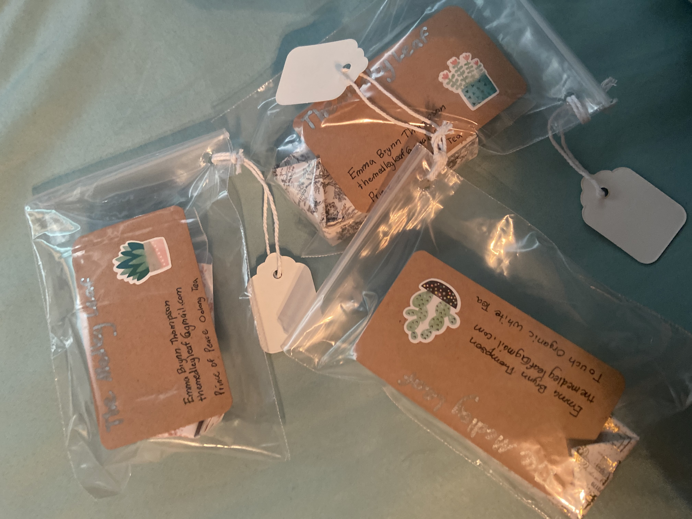
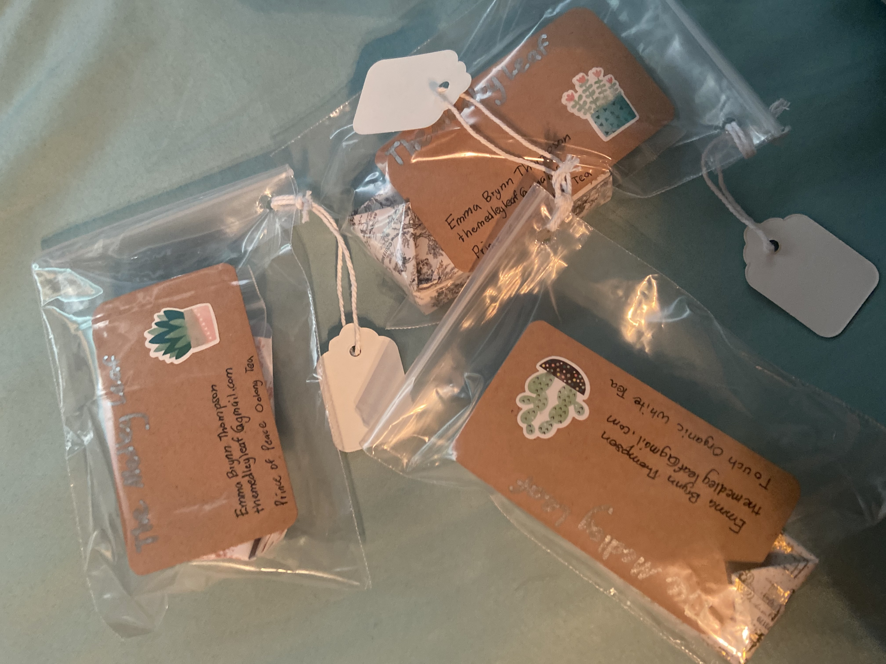
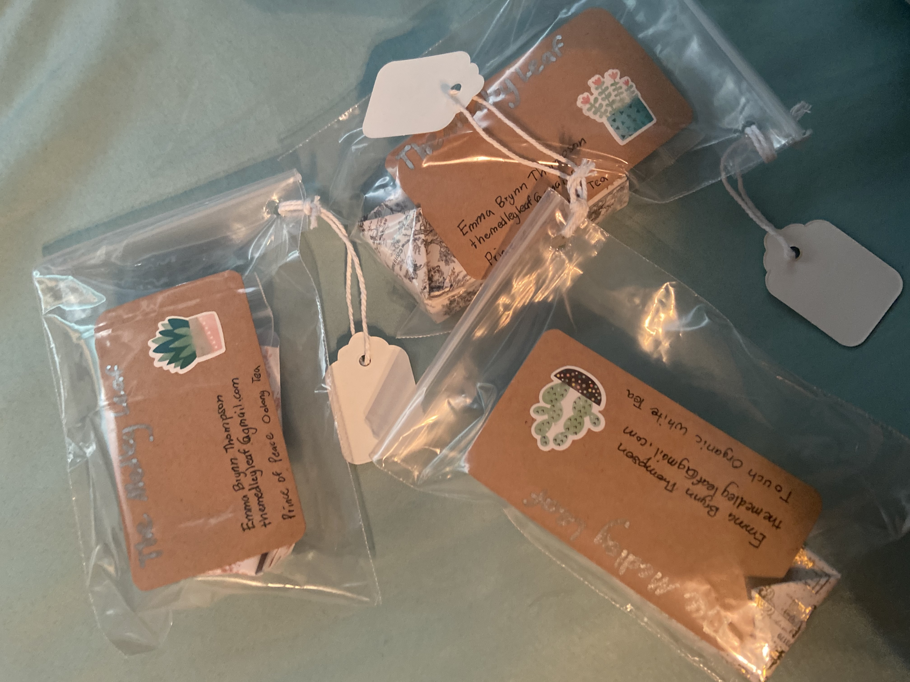

This is a hobby I have back home, since that's where most of my supplies are. I even tried to start a business my senior year.

Cleaning my car makes me happy, and I love seeing her shiny in the end. I typically use Chemical Guys for extreme detailing. In the photo below, I cleaned up quickly for a couple quick photos in front of some trees.

Driving is one of my favorite things to do, and I love seeing new places. ALso pictured is my old 2012 Honda Civic LX, Mochi. I would love to put the radi8 r8b12 wheel on one of my cars some day.
I enjoy cooking and baking. The below dish is pasta sauce with a feta, mushroom, tomato and basil before the pasta is added. I also enjoy going to restaurants and trying new foods.
I have many other small projects that I'm currently working on or planning. These include adding to my walls through car emblems and other auto companies on watercolor. In addition to this is a research page and SQL database on all car makes and models, all the way down to the year and trim. I'm also planning more HTML webistes (possibly). In addition to these, I also somewhat enjoy embroidery. I use this to make small things for some of my interests, such as frogs or axolotls.